- 00 开篇词 为什么每一位大前端从业者都应该学习Flutter？.md.html
- 01 预习篇 · 从0开始搭建Flutter工程环境.md.html
- 02 预习篇 · Dart语言概览.md.html
- 03 深入理解跨平台方案的历史发展逻辑.md.html
- 04 Flutter区别于其他方案的关键技术是什么？.md.html
- 05 从标准模板入手，体会Flutter代码是如何运行在原生系统上的.md.html
- 06 基础语法与类型变量：Dart是如何表示信息的？.md.html
- 07 函数、类与运算符：Dart是如何处理信息的？.md.html
- 08 综合案例：掌握Dart核心特性.md.html
- 09 Widget，构建Flutter界面的基石.md.html
- 10 Widget中的State到底是什么？.md.html
- 11 提到生命周期，我们是在说什么？.md.html
- 12 经典控件（一）：文本、图片和按钮在Flutter中怎么用？.md.html
- 13 经典控件（二）：UITableView_ListView在Flutter中是什么？.md.html
- 14 经典布局：如何定义子控件在父容器中排版的位置？.md.html
- 15 组合与自绘，我该选用何种方式自定义Widget？.md.html
- 16 从夜间模式说起，如何定制不同风格的App主题？.md.html
- 17 依赖管理（一）：图片、配置和字体在Flutter中怎么用？.md.html
- 18 依赖管理（二）：第三方组件库在Flutter中要如何管理？.md.html
- 19 用户交互事件该如何响应？.md.html
- 20 关于跨组件传递数据，你只需要记住这三招.md.html
- 21 路由与导航，Flutter是这样实现页面切换的.md.html
- 22 如何构造炫酷的动画效果？.md.html
- 23 单线程模型怎么保证UI运行流畅？.md.html
- 24 HTTP网络编程与JSON解析.md.html
- 25 本地存储与数据库的使用和优化.md.html
- 26 如何在Dart层兼容Android_iOS平台特定实现？（一）.md.html
- 27 如何在Dart层兼容Android_iOS平台特定实现？（二）.md.html
- 28 如何在原生应用中混编Flutter工程？.md.html
- 29 混合开发，该用何种方案管理导航栈？.md.html
- 30 为什么需要做状态管理，怎么做？.md.html
- 31 如何实现原生推送能力？.md.html
- 32 适配国际化，除了多语言我们还需要注意什么_.md.html
- 33 如何适配不同分辨率的手机屏幕？.md.html
- 34 如何理解Flutter的编译模式？.md.html
- 35 Hot Reload是怎么做到的？.md.html
- 36 如何通过工具链优化开发调试效率？.md.html
- 37 如何检测并优化Flutter App的整体性能表现？.md.html
- 38 如何通过自动化测试提高交付质量？.md.html
- 39 线上出现问题，该如何做好异常捕获与信息采集？.md.html
- 40 衡量Flutter App线上质量，我们需要关注这三个指标.md.html
- 41 组件化和平台化，该如何组织合理稳定的Flutter工程结构？.md.html
- 42 如何构建高效的Flutter App打包发布环境？.md.html
- 43 如何构建自己的Flutter混合开发框架（一）？.md.html
- 44 如何构建自己的Flutter混合开发框架（二）？.md.html
- 特别放送 温故而知新，与你说说专栏的那些思考题.md.html
- 结束语 勿畏难，勿轻略.md.html
- 捐赠
31 如何实现原生推送能力？
你好，我是陈航。
在上一篇文章中，我与你分享了如何使用Provider去维护Flutter组件共用的数据状态。在Flutter中状态即数据，通过数据资源封装、注入和读写这三步，我们不仅可以实现跨组件之间的数据共享，还能精确控制UI刷新粒度，避免无关组件的刷新。
其实，数据共享不仅存在于客户端内部，同样也存在于服务端与客户端之间。比如，有新的微博评论，或者是发生了重大新闻，我们都需要在服务端把这些状态变更的消息实时推送到客户端，提醒用户有新的内容。有时，我们还会针对特定的用户画像，通过推送实现精准的营销信息触达。
可以说，消息推送是增强用户黏性，促进用户量增长的重要手段。那么，消息推送的流程是什么样的呢？
消息推送流程
手机推送每天那么多，导致在我们看来这很简单啊。但其实，消息推送是一个横跨业务服务器、第三方推送服务托管厂商、操作系统长连接推送服务、用户终端、手机应用五方的复杂业务应用场景。
在iOS上，苹果推送服务（APNs）接管了系统所有应用的消息通知需求；而Android原生，则提供了类似Firebase的云消息传递机制（FCM），可以实现统一的推送托管服务。
当某应用需要发送消息通知时，这则消息会由应用的服务器先发给苹果或Google，经由APNs或FCM被发送到设备，设备操作系统在完成解析后，最终把消息转给所属应用。这个流程的示意图，如下所示。
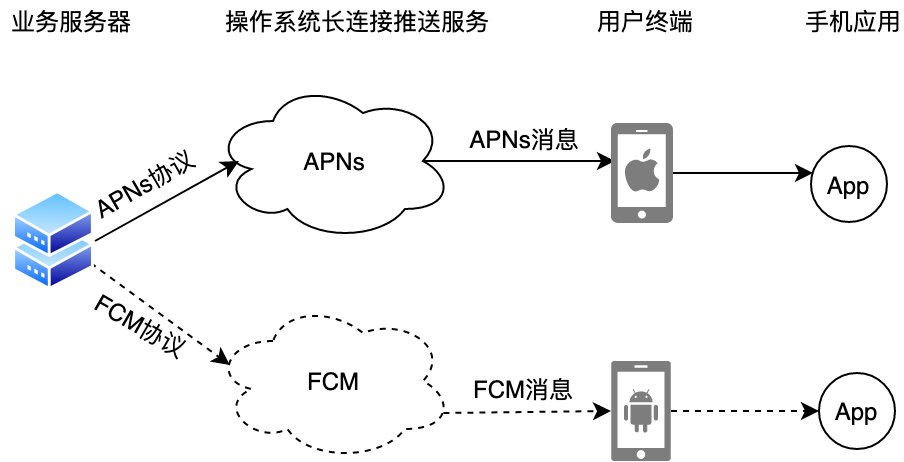
图1 原生消息推送流程
不过，Google服务在大陆地区使用并不稳定，因此国行Android手机通常会把Google服务换成自己的服务，定制一套推送标准。而这对开发者来说，无疑是增大了适配负担。所以针对Android端，我们通常会使用第三方推送服务，比如极光推送、友盟推送等。
虽然这些第三方推送服务使用自建的长连接，无法享受操作系统底层的优化，但它们会对所有使用推送服务的App共享推送通道，只要有一个使用第三方推送服务的应用没被系统杀死，就可以让消息及时送达。
而另一方面，这些第三方服务简化了业务服务器与手机推送服务建立连接的操作，使得我们的业务服务器通过简单的API调用就可以完成消息推送。
而为了保持Android/iOS方案的统一，在iOS上我们也会使用封装了APNs通信的第三方推送服务。
第三方推送的服务流程，如下图所示。
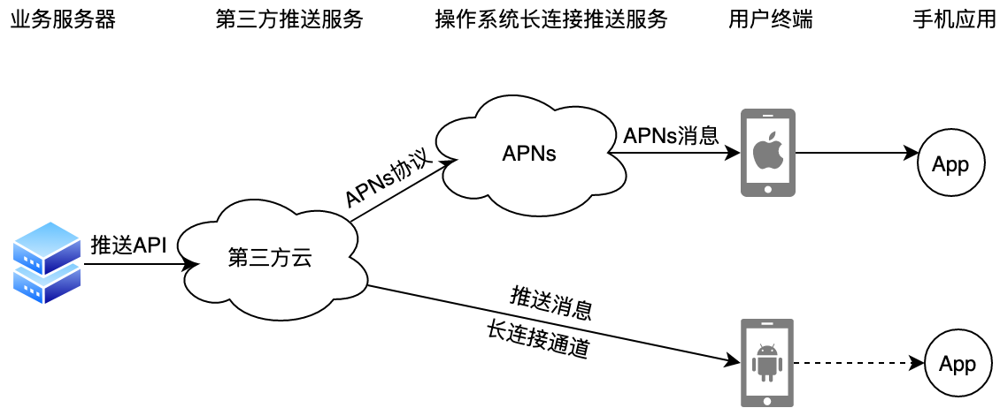
图2 第三方推送服务流程
这些第三方推送服务厂商提供的能力和接入流程大都一致，考虑到极光的社区和生态相对活跃，所以今天我们就以极光为例，来看看在Flutter应用中如何才能引用原生的推送能力。
原生推送接入流程
要想在Flutter中接收推送消息，我们需要把原生的推送能力暴露给Flutter应用，即在原生代码宿主实现推送能力（极光SDK）的接入，并通过方法通道提供给Dart层感知推送消息的机制。
插件工程
在第26篇文章中，我们学习了如何在原生工程中的Flutter应用入口注册原生代码宿主回调，从而实现Dart层调用原生接口的方案。这种方案简单直接，适用于Dart层与原生接口之间交互代码量少、数据流动清晰的场景。
但对于推送这种涉及Dart与原生多方数据流转、代码量大的模块，这种与工程耦合的方案就不利于独立开发维护了。这时，我们需要使用Flutter提供的插件工程对其进行单独封装。
Flutter的插件工程与普通的应用工程类似，都有android和ios目录，这也是我们完成平台相关逻辑代码的地方，而Flutter工程插件的注册，则仍会在应用的入口完成。除此之外，插件工程还内嵌了一个example工程，这是一个引用了插件代码的普通Flutter应用工程。我们通过example工程，可以直接调试插件功能。
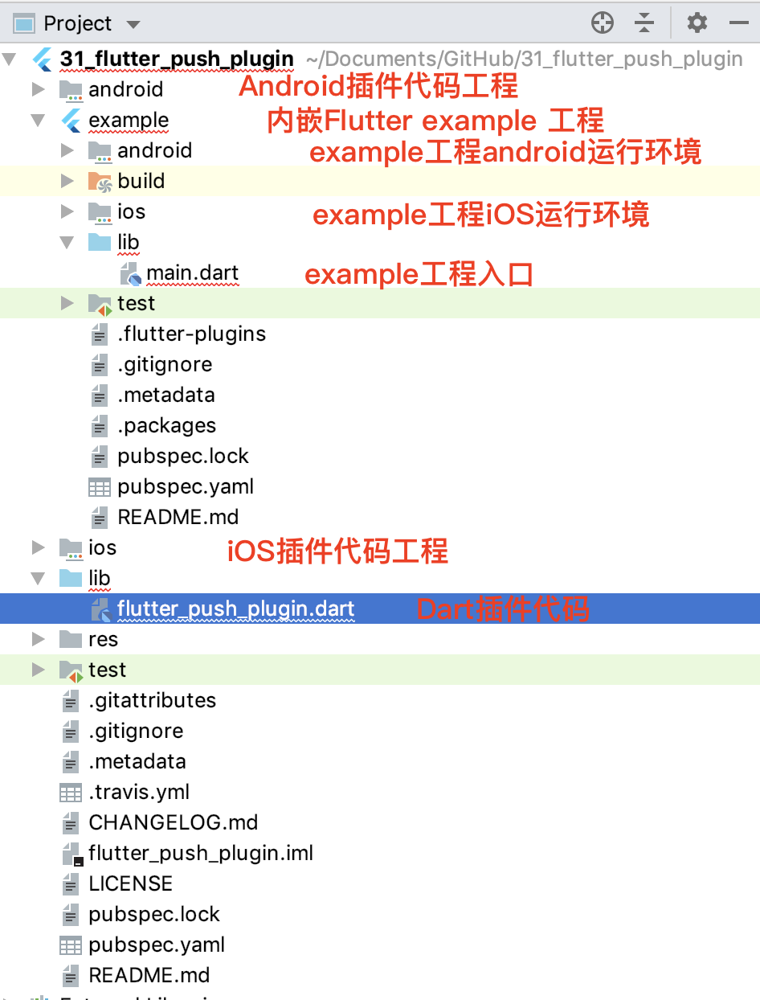
图3 插件工程目录结构
在了解了整体工程的目录结构之后，接下来我们需要去Dart插件代码所在的flutter_push_plugin.dart文件，实现Dart层的推送接口封装。
Dart接口实现
为了实现消息的准确触达，我们需要提供一个可以标识手机上App的地址，即token或id。一旦完成地址的上报，我们就可以等待业务服务器给我们发消息了。
因为我们需要使用极光这样的第三方推送服务，所以还得进行一些前置的应用信息关联绑定，以及SDK的初始化工作。可以看到，对于一个应用而言，接入推送的过程可以拆解为以下三步：
- 初始化极光SDK；
- 获取地址id；
- 注册消息通知。
这三步对应着在Dart层需要封装的3个原生接口调用：setup、registrationID和setOpenNotificationHandler。
前两个接口是在方法通道上调用原生代码宿主提供的方法，而注册消息通知的回调函数setOpenNotificationHandler则相反，是原生代码宿主在方法通道上调用Dart层所提供的事件回调，因此我们需要在方法通道上为原生代码宿主注册反向回调方法，让原生代码宿主收到消息后可以直接通知它。
另外，考虑到推送是整个应用共享的能力，因此我们将FlutterPushPlugin这个类封装成了单例：
//Flutter Push插件
class FlutterPushPlugin {
//单例
static final FlutterPushPlugin _instance = new FlutterPushPlugin.private(const MethodChannel('flutter_push_plugin'));
//方法通道
final MethodChannel _channel;
//消息回调
EventHandler _onOpenNotification;
//构造方法
FlutterPushPlugin.private(MethodChannel channel) : _channel = channel {
//注册原生反向回调方法，让原生代码宿主可以执行onOpenNotification方法
_channel.setMethodCallHandler(_handleMethod);
}
//初始化极光SDK
setupWithAppID(String appID) {
_channel.invokeMethod("setup", appID);
}
//注册消息通知
setOpenNotificationHandler(EventHandler onOpenNotification) {
_onOpenNotification = onOpenNotification;
}
//注册原生反向回调方法，让原生代码宿主可以执行onOpenNotification方法
Future<Null> _handleMethod(MethodCall call) {
switch (call.method) {
case "onOpenNotification":
return _onOpenNotification(call.arguments);
default:
throw new UnsupportedError("Unrecognized Event");
}
}
//获取地址id
Future<String> get registrationID async {
final String regID = await _channel.invokeMethod('getRegistrationID');
return regID;
}
}
Dart层是原生代码宿主的代理，可以看到这一层的接口设计算是简单。接下来，我们分别去接管推送的Android和iOS平台上完成相应的实现。
Android接口实现
考虑到Android平台的推送配置工作相对较少，因此我们先用Android Studio打开example下的android工程进行插件开发工作。需要注意的是，由于android子工程的运行依赖于Flutter工程编译构建产物，所以在打开android工程进行开发前，你需要确保整个工程代码至少build过一次，否则IDE会报错。
备注：以下操作步骤参考极光Android SDK集成指南。
首先，我们需要在插件工程下的build.gradle引入极光SDK，即jpush与jcore：
dependencies {
implementation 'cn.jiguang.sdk:jpush:3.3.4'
implementation 'cn.jiguang.sdk:jcore:2.1.2'
}
然后，在原生接口FlutterPushPlugin类中，依次把Dart层封装的3个接口调用，即setup、getRegistrationID与onOpenNotification，提供极光Android SDK的实现版本。
需要注意的是，由于极光Android SDK的信息绑定是在应用的打包配置里设置，并不需要通过代码完成（iOS才需要），因此setup方法的Android版本是一个空实现：
public class FlutterPushPlugin implements MethodCallHandler {
//注册器，通常为MainActivity
public final Registrar registrar;
//方法通道
private final MethodChannel channel;
//插件实例
public static FlutterPushPlugin instance;
//注册插件
public static void registerWith(Registrar registrar) {
//注册方法通道
final MethodChannel channel = new MethodChannel(registrar.messenger(), "flutter_push_plugin");
instance = new FlutterPushPlugin(registrar, channel);
channel.setMethodCallHandler(instance);
//把初始化极光SDK提前至插件注册时
JPushInterface.setDebugMode(true);
JPushInterface.init(registrar.activity().getApplicationContext());
}
//私有构造方法
private FlutterPushPlugin(Registrar registrar, MethodChannel channel) {
this.registrar = registrar;
this.channel = channel;
}
//方法回调
@Override
public void onMethodCall(MethodCall call, Result result) {
if (call.method.equals("setup")) {
//极光Android SDK的初始化工作需要在App工程中配置，因此不需要代码实现
result.success(0);
}
else if (call.method.equals("getRegistrationID")) {
//获取极光推送地址标识符
result.success(JPushInterface.getRegistrationID(registrar.context()));
} else {
result.notImplemented();
}
}
public void callbackNotificationOpened(NotificationMessage message) {
//将推送消息回调给Dart层
channel.invokeMethod("onOpenNotification",message.notificationContent);
}
}
可以看到，我们的FlutterPushPlugin类中，仅提供了callbackNotificationOpened这个工具方法，用于推送消息参数回调给Dart，但这个类本身并没有去监听极光SDK的推送消息。
为了获取推送消息，我们分别需要继承极光SDK提供的两个类：JCommonService和JPushMessageReceiver。
- JCommonService是一个后台Service，实际上是极光共享长连通道的核心，可以在多手机平台上使得推送通道更稳定。
- JPushMessageReceiver则是一个BroadcastReceiver，推送消息的获取都是通过它实现的。我们可以通过覆盖其onNotifyMessageOpened方法，从而在用户点击系统推送消息时获取到通知。
作为BroadcastReceiver的JPushMessageReceiver，可以长期在后台存活，监听远端推送消息，但Flutter可就不行了，操作系统会随时释放掉后台应用所占用的资源。因此，在用户点击推送时，我们在收到相应的消息回调后，需要做的第一件事情不是立刻通知Flutter，而是应该启动应用的MainActivity。在确保Flutter已经完全初始化后，才能通知Flutter有新的推送消息。
因此在下面的代码中，我们在打开MainActivity后，等待了1秒，才执行相应的Flutter回调通知：
//JPushXCustomService.java
//长连通道核心，可以使推送通道更稳定
public class JPushXCustomService extends JCommonService {
}
//JPushXMessageReceiver.java
//获取推送消息的Receiver
public class JPushXMessageReceiver extends JPushMessageReceiver {
//用户点击推送消息回调
@Override
public void onNotifyMessageOpened(Context context, final NotificationMessage message) {
try {
//找到MainActivity
String mainClassName = context.getApplicationContext().getPackageName() + ".MainActivity";
Intent i = new Intent(context, Class.forName(mainClassName));
i.addFlags(Intent.FLAG_ACTIVITY_NEW_TASK | Intent.FLAG_ACTIVITY_SINGLE_TOP);
//启动主Activity
context.startActivity(i);
} catch (Exception e) {
Log.e("tag","找不到MainActivity");
}
new Timer().schedule(new TimerTask() {
@Override
public void run() {
FlutterPushPlugin.instance.callbackNotificationOpened(message);
}
},1000); // 延迟1秒通知Dart
}
}
最后，我们还需要在插件工程的AndroidManifest.xml中，分别声明receiver JPushXMessageReceiver和service JPushXCustomService，完成对系统的注册：
...
<application>
<!--注册推送消息接收类 -->
<receiver android:name=".JPushXMessageReceiver">
<intent-filter>
<action android:name="cn.jpush.android.intent.RECEIVE_MESSAGE" />
<category android:name="${applicationId}" />
</intent-filter>
</receiver>
<!--注册长连通道Service -->
<service android:name=".JPushXCustomService"
android:enabled="true"
android:exported="false"
android:process=":pushcore">
<intent-filter>
<action android:name="cn.jiguang.user.service.action" />
</intent-filter>
</service>
</application>
...
接收消息和回调消息的功能完成后，FlutterPushPlugin插件的Android部分就搞定了。接下来，我们去开发插件的iOS部分。
iOS接口实现
与Android类似，我们需要使用Xcode打开example下的ios工程进行插件开发工作。同样，在打开ios工程前，你需要确保整个工程代码至少build过一次，否则IDE会报错。
备注：以下操作步骤参考极光iOS SDK集成指南
首先，我们需要在插件工程下的flutter_push_plugin.podspec文件中引入极光SDK，即jpush。这里，我们选用了不使用广告id的版本：
Pod::Spec.new do |s|
...
s.dependency 'JPush', '3.2.2-noidfa'
end
然后，在原生接口FlutterPushPlugin类中，同样依次为setup、getRegistrationID与onOpenNotification，提供极光 iOS SDK的实现版本。
需要注意的是，APNs的推送消息是在ApplicationDelegate中回调的，所以我们需要在注册插件时，为插件提供同名的回调函数，让极光SDK把推送消息转发到插件的回调函数中。
与Android类似，在极光SDK收到推送消息时，我们的应用可能处于后台，因此在用户点击了推送消息，把Flutter应用唤醒时，我们应该在确保Flutter已经完全初始化后，才能通知Flutter有新的推送消息。
因此在下面的代码中，我们在用户点击了推送消息后也等待了1秒，才执行相应的Flutter回调通知：
@implementation FlutterPushPlugin
//注册插件
+ (void)registerWithRegistrar:(NSObject<FlutterPluginRegistrar>*)registrar {
//注册方法通道
FlutterMethodChannel* channel = [FlutterMethodChannel methodChannelWithName:@"flutter_push_plugin" binaryMessenger:[registrar messenger]];
//初始化插件实例，绑定方法通道
FlutterPushPlugin* instance = [[FlutterPushPlugin alloc] init];
instance.channel = channel;
//为插件提供ApplicationDelegate回调方法
[registrar addApplicationDelegate:instance];
//注册方法通道回调函数
[registrar addMethodCallDelegate:instance channel:channel];
}
//处理方法调用
- (void)handleMethodCall:(FlutterMethodCall*)call result:(FlutterResult)result {
if([@"setup" isEqualToString:call.method]) {
//极光SDK初始化方法
[JPUSHService setupWithOption:self.launchOptions appKey:call.arguments channel:@"App Store" apsForProduction:YES advertisingIdentifier:nil];
} else if ([@"getRegistrationID" isEqualToString:call.method]) {
//获取极光推送地址标识符
[JPUSHService registrationIDCompletionHandler:^(int resCode, NSString *registrationID) {
result(registrationID);
}];
} else {
//方法未实现
result(FlutterMethodNotImplemented);
}
}
//应用程序启动回调
-(BOOL)application:(UIApplication *)application didFinishLaunchingWithOptions:(NSDictionary *)launchOptions {
//初始化极光推送服务
JPUSHRegisterEntity * entity = [[JPUSHRegisterEntity alloc] init];
//设置推送权限
entity.types = JPAuthorizationOptionAlert|JPAuthorizationOptionBadge|JPAuthorizationOptionSound;
//请求推送服务
[JPUSHService registerForRemoteNotificationConfig:entity delegate:self];
//存储App启动状态，用于后续初始化调用
self.launchOptions = launchOptions;
return YES;
}
//推送token回调
- (void)application:(UIApplication *)application didRegisterForRemoteNotificationsWithDeviceToken:(NSData *)deviceToken {
///注册DeviceToken，换取极光推送地址标识符
[JPUSHService registerDeviceToken:deviceToken];
}
//推送被点击回调
- (void)jpushNotificationCenter:(UNUserNotificationCenter *)center didReceiveNotificationResponse:(UNNotificationResponse *)response withCompletionHandler:(void(^)(void))completionHandler {
//获取推送消息
NSDictionary * userInfo = response.notification.request.content.userInfo;
NSString *content = userInfo[@"aps"][@"alert"];
if ([content isKindOfClass:[NSDictionary class]]) {
content = userInfo[@"aps"][@"alert"][@"body"];
}
//延迟1秒通知Flutter，确保Flutter应用已完成初始化
dispatch_after(dispatch_time(DISPATCH_TIME_NOW, (int64_t)(1 * NSEC_PER_SEC)), dispatch_get_main_queue(), ^{
[self.channel invokeMethod:@"onOpenNotification" arguments:content];
});
//清除应用的小红点
UIApplication.sharedApplication.applicationIconBadgeNumber = 0;
//通知系统，推送回调处理完毕
completionHandler();
}
//前台应用收到了推送消息
- (void)jpushNotificationCenter:(UNUserNotificationCenter *)center willPresentNotification:(UNNotification *)notification withCompletionHandler:(void (^)(NSInteger options))completionHandler {
//通知系统展示推送消息提示
completionHandler(UNNotificationPresentationOptionAlert);
}
@end
至此，在完成了极光iOS SDK的接口封装之后，FlutterPushPlugin插件的iOS部分也搞定了。
FlutterPushPlugin插件为Flutter应用提供了原生推送的封装，不过要想example工程能够真正地接收到推送消息，我们还需要对exmaple工程进行最后的配置，即：为它提供应用推送证书，并关联极光应用配置。
应用工程配置
在单独为Android/iOS应用进行推送配置之前，我们首先需要去极光的官方网站，为example应用注册一个唯一标识符（即AppKey）：
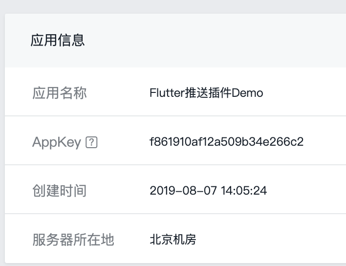
图4 极光应用注册
在得到了AppKey之后，我们需要依次进行Android与iOS的配置工作。
Android的配置工作相对简单，整个配置过程完全是应用与极光SDK的关联工作。
首先，根据example的Android工程包名，完成Android工程的推送注册：
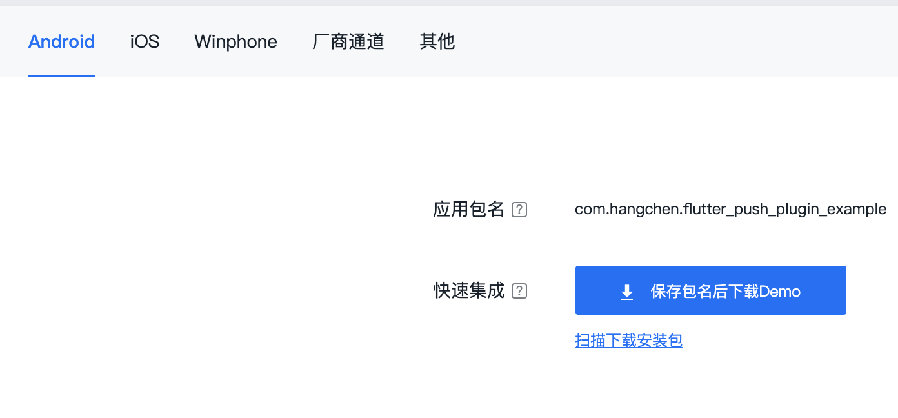
图5 example Android推送注册
然后，通过AppKey，在app的build.gradle文件中实现极光信息的绑定：
defaultConfig {
...
//ndk支持架构
ndk {
abiFilters 'armeabi', 'armeabi-v7a', 'arm64-v8a'
}
manifestPlaceholders = [
JPUSH_PKGNAME : applicationId, //包名
JPUSH_APPKEY : "f861910af12a509b34e266c2", //JPush 上注册的包名对应的Appkey
JPUSH_CHANNEL : "developer-default", //填写默认值即可
]
}
至此，Android部分的所有配置工作和接口实现都已经搞定了。接下来，我们再来看看iOS的配置实现。
iOS的应用配置相对Android会繁琐一些，因为整个配置过程涉及应用、苹果APNs服务、极光三方之间的信息关联。
除了需要在应用内绑定极光信息之外（即handleMethodCall中的setup方法），还需要在苹果的开发者官网提前申请苹果的推送证书。关于申请证书，苹果提供了.p12证书和APNs Auth Key两种鉴权方式。
这里，我推荐使用更为简单的Auth Key方式。申请推送证书的过程，极光官网提供了详细的注册步骤，这里我就不再赘述了。需要注意的是，申请iOS的推送证书时，你只能使用付费的苹果开发者账号。
在拿到了APNs Auth Key之后，我们同样需要去极光官网，根据Bundle ID进行推送设置，并把Auth Key上传至极光进行托管，由它完成与苹果的鉴权工作：
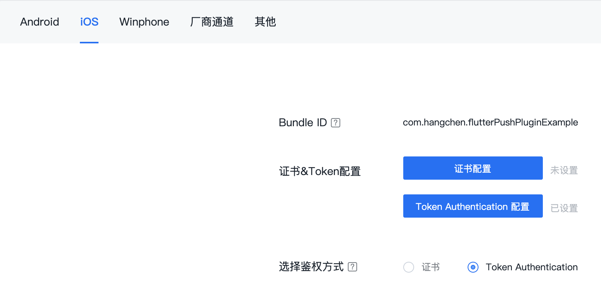
图6 example iOS推送注册
通过上面的步骤，我们已经完成了将推送证书与极光信息绑定的操作，接下来，我们回到Xcode打开的example工程，进行最后的配置工作。
首先，我们需要为example工程开启Application Target的Capabilities->Push Notifications选项，启动应用的推送能力支持，如下图所示：
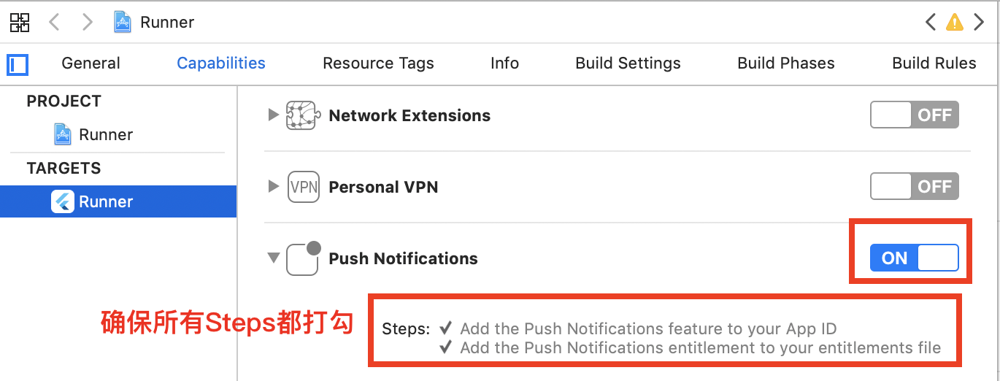
图7 example iOS推送配置
然后，我们需要切换到Application Target的Info面板，手动配置NSAppTransportSecurity键值对，以支持极光SDK非https域名服务：
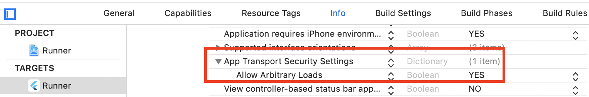
图8 example iOS支持Http配置
最后，在Info tab下的Bundle identifier项，把我们刚刚在极光官网注册的Bundle ID显式地更新进去：
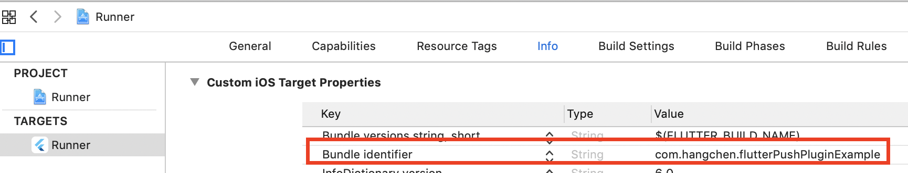
图9 Bundle ID配置
至此，example工程运行所需的所有原生配置工作和接口实现都已经搞定了。接下来，我们就可以在example工程中的main.dart文件中，使用FlutterPushPlugin插件来实现原生推送能力了。
在下面的代码中，我们在main函数的入口，使用插件单例注册了极光推送服务，随后在应用State初始化时，获取了极光推送地址，并设置了消息推送回调：
//获取推送插件单例
FlutterPushPlugin fpush = FlutterPushPlugin();
void main() {
//使用AppID注册极光推送服务(仅针对iOS平台)
fpush.setupWithAppID("f861910af12a509b34e266c2");
runApp(MyApp());
}
class MyApp extends StatefulWidget {
@override
_MyAppState createState() => _MyAppState();
}
class _MyAppState extends State<MyApp> {
//极光推送地址regID
String _regID = 'Unknown';
//接收到的推送消息
String _notification = "";
@override
initState() {
super.initState();
//注册推送消息回调
fpush.setOpenNotificationHandler((String message) async {
//刷新界面状态，展示推送消息
setState(() {
_notification = message;
});
});
//获取推送地址regID
initPlatformState();
}
initPlatformState() async {
//调用插件封装的regID
String regID = await fpush.registrationID;
//刷新界面状态，展示regID
setState(() {
_regID = regID;
});
}
@override
Widget build(BuildContext context) {
return MaterialApp(
home: Scaffold(
body: Center(
child: Column(
children: <Widget>[
//展示regID，以及收到的消息
Text('Running on: $_regID\n'),
Text('Notification Received: $_notification')
],
),
),
),
);
}
}
点击运行，可以看到，我们的应用已经可以获取到极光推送地址了：
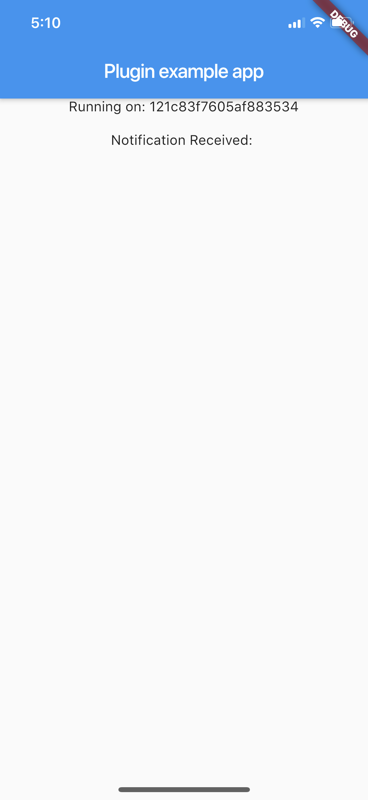
图10 iOS运行示例
图11 Android运行示例
接下来，我们再去极光开发者服务后台发一条真实的推送消息。在服务后台选择我们的App，随后进入极光推送控制台。这时，我们就可以进行消息推送测试了。
在发送通知一栏，我们把通知标题改为“测试”，通知内容设置为“极光推送测试”；在目标人群一栏，由于是测试账号，我们可以直接选择“广播所有人”，如果你希望精确定位到接收方，也可以提供在应用中获取到的极光推送地址（即Registration ID）：
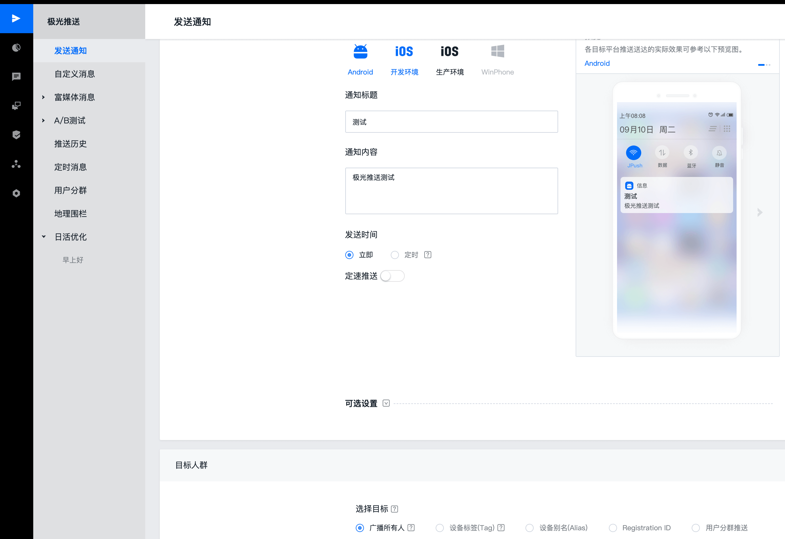
图12 极光推送后台
点击发送预览并确认，可以看到，我们的应用不仅可以被来自极光的推送消息唤醒，还可以在Flutter应用内收到来自原生宿主转发的消息内容：

图13 iOS推送消息
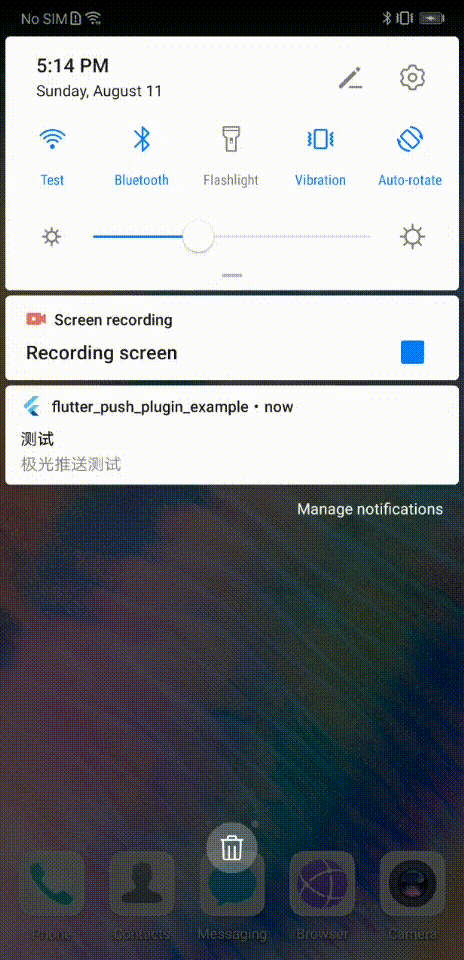
图 14 Android推送消息
总结
好了，今天的分享就到这里。我们一起来小结一下吧。
我们以Flutter插件工程的方式，为极光SDK提供了一个Dart层的封装。插件工程同时提供了iOS和Android目录，我们可以在这两个目录下完成原生代码宿主封装，不仅可以为Dart层提供接口正向回调（比如，初始化、获取极光推送地址），还可以通过方法通道以反向回调的方式将推送消息转发给Dart。
今天，我和你分享了很多原生代码宿主的配置、绑定、注册的逻辑。不难发现，推送过程链路长、涉众多、配置复杂，要想在Flutter完全实现原生推送能力，工作量主要集中在原生代码宿主，Dart层能做的事情并不多。
我把今天分享所改造的Flutter_Push_Plugin放到了GitHub中，你可以把插件工程下载下来，多运行几次，体会插件工程与普通Flutter工程的异同，并加深对消息推送全流程的认识。其中，Flutter_Push_Plugin提供了实现原生推送功能的最小集合，你可以根据实际需求完善这个插件。
需要注意的是，我们今天的实际工程演示是通过内嵌的example工程示例所完成的，如果你有一个独立的Flutter工程（比如Flutter_Push_Demo）需要接入Flutter_Push_Plugin，其配置方式与example工程并无不同，唯一的区别是，需要在pubspec.yaml文件中将对插件的依赖显示地声明出来而已：
dependencies:
flutter_push_plugin:
git:
url: https://github.com/cyndibaby905/31_flutter_push_plugin.git
思考题
在Flutter_Push_Plugin的原生实现中，用户点击了推送消息把Flutter应用唤醒时，为了确保Flutter完成初始化，我们等待了1秒才执行相应的Flutter回调通知。这段逻辑有需要优化的地方吗？为了让Flutter代码能够更快地收到推送消息，你会如何优化呢？
欢迎你在评论区给我留言分享你的观点，我会在下一篇文章中等待你！感谢你的收听，也欢迎你把这篇文章分享给更多的朋友一起阅读。
© 2019 - 2023 Liangliang Lee. Powered by gin and hexo-theme-book.